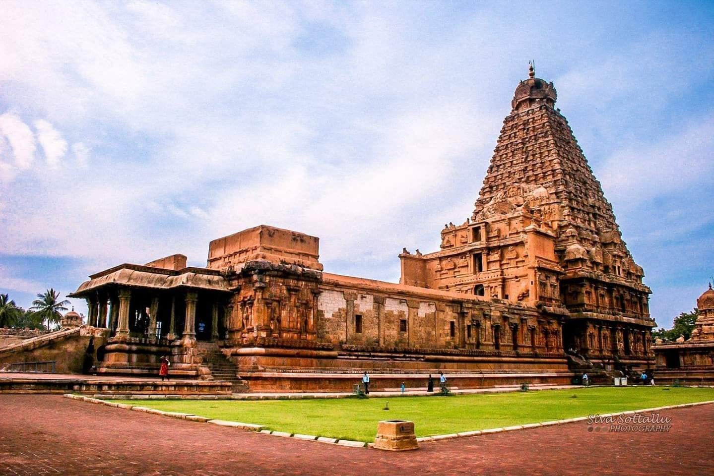
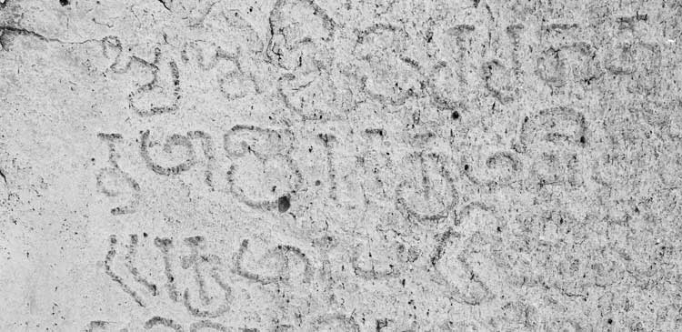

According to local legend, the word Thanjavur is derived from “Tanjan”, an Asura (giant)
in Hindu who was killed in what is now Thanjavur by the Hindu god Neelamegha Perumal,
a form of Vishnu. The word Thanjavur is indeed a Tamil name. “Than”-cold,
“chei”-farmland, “ur”- city means city surrounded by cold farmlands. Later, the word
“Thancheiur” has become “Thanjavur”.
The city rose to prominence during the rule of Chola monarch King Vijayalaya chola who
made it the headquarters of Chola dynasty. After the fall of Chola dynasty, the city was
ruled by a number of dynasties like Pandyas, Nayaks, Marathas and the British.
The administrative powers of Thanjavur were given over to British Empire under the
signed treaty of 1799. British records refer the city as Tanjore.
Thanjavur attained prominence under the Chola rulers who were paramount in South India
during 9th to 12th centuries. They were not only excellent rulers but also mighty builders,
who erected a large number of exquisite temples in their empire, some of which constitute
the finest specimens of architecture. Hence the district stands distinguished in the state even
in its large number of temples, whose legends extend deep into early historic times.

Many of these temples reflect the power, genius and architectural grandeurs of their authors
displaying the unique and magnificent proficiency in sculpture, painting and wood carving.
Art gallery, the great Saraswathi Mahal library, the ‘Sangeetha Mahal’ (hall of music), the
thriving of classical music and dance known as ‘Bharatnatyam’ and the celebration of grand
annual music festival at Thiruvaiyaru, in honour of the great Saint Thyagaraja, all bear
testimony to the cultural heritage.

There are no references to Thanjavur in any of the Sangam period (third century BC to fourth
century AD) Tamil records, though some scholars believe that the city has existed since that
time. Kovil Venni, situated 15 miles (24 km) to the east of the city, was the site of the Battle
of Venni between the Chola king Karikala and a confederacy of the Cheras and the Pandyas.
The Cholas seemed to have faced an invasion of the Kalabhras in the third century AD after
which the kingdom faded into obscurity. The region around present day Thanjavur was
conquered by the Mutharayars during sixth century, who ruled it up to 849.
Thanjavur remained under the supremacy of the Vijayanagar Kings for a longer period.
Thanjavur is believed to have been conquered by Kampanna Udayar during his invasion
of Srirangam between 1365 and 1371. Deva Raya’s inscription dated 1443, Thirumala’s
inscription dated 1455 and Achuta Deva’s land grants dated 1532 and 1539 attest
Vijayanagar’s dominance over Thanjavur.
VISITED PLACES
Thanjavur Temple
Arulmozhivarman, a Tamil emperor who was popular as Rajaraja Chola I laid out foundations of Brihadeeswarar
Temple during 1002 CE. It was first among other great building projects by Tamil Chola. A symmetrical and axial
geometry rules layout of this temple. Temples from same period and two following centuries are expressions of
Tamils Chola power, artistic expertise and wealth. Emergence of these types of features, such as multifaceted
columns along with projecting signals of square capitals signifies arrival of Chola style, which was new at that time.
It is one architectural exemplar, which showcases true form of Dravida kind of architecture in temples and is a
representative of ideology of Chola Empire and Southern India’s Tamil civilization. Brihadeeswarar Temple
“testifies to Chola’s brilliant achievements in architecture, painting, bronze casting and sculpture.”
From the Epigraphical evidence it is known about Rajaraja-I started building this temple on his 19th year and
completed on 275th day of his 25th year. It took just 6 years to complete this work on 1010 A.D.
Gangaikonda cholapuram Brihadiswarar Koil
Gangaikonda cholapuram was made the capital of the Cholas by Rajendra I, Raja Raja Chola's son.
The entire city with its forts, palaces, halls, tanks, parks, etc. was laid to commemorate his victorious
march to the Gangetic plains in the North, to bring the waters of the Ganges. The crowning feature was the
Gangaikondacholisvarar temple also known as the Brihadeeswara temple on the model of the Peria koil in Tanjavur.
It is located in a village near Jayankondam in Ariyalur district, Tamilnadu. Only a portion of the great temple
remains now. The stones from portions were taken to build the Lower Anaicut across the Kollidam. The vimana
is smaller than at the peria koil, with few storeys but excels in the bold sculptural details.
The distinctive features are the beautiful stone sculptures on the niches, the Simhakeni - a circular well with
a lion adorning the entrance, the bull found on a pedestal inside the court, facing the main sanctum.